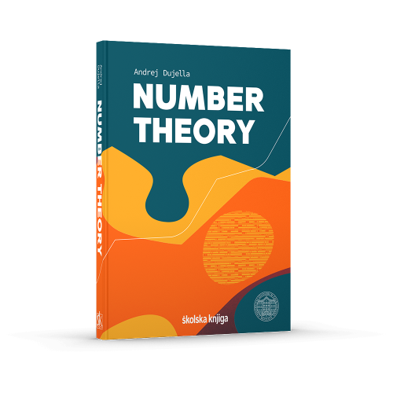
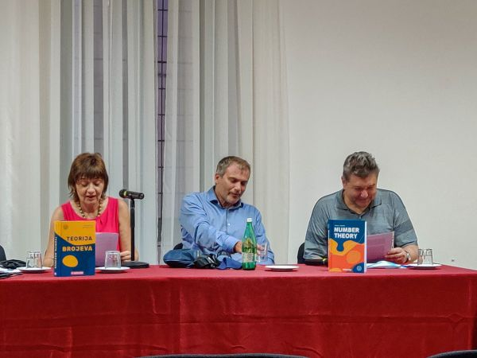
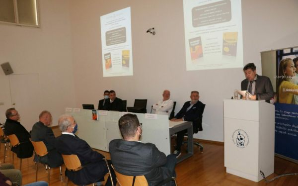

The book can be purchased at Amazon.co.uk,
Amazon.de,
Amazon.com,
Amazon.ca,
Amazon.es,
Amazon.fr,
Amazon.it,
Amazon.co.jp,
Amazon.com.au,
Amazon.in and
Školska knjiga.
If Amazon does not deliver to your country, you may contact "Skolska knjiga" foreign sales department at
inozemna@skolskaknjiga.hr.
Also the delivery costs are significantly smaller for certain countries
(in particular, for Austria, Belgium, Czechia, Denmark, Estonia, Germany, Greece, Luxemburg, Hungary,
Macedonia, Netherlands, Poland, Portugal, Romania, Slovakia, Slovenia, Sweden)
when the book is purchased directly from the publisher
Skolska knjiga.
You may contact their internet sales department at podrska@skolskaknjiga.hr.
Dominovic bookstore
(knjizara@dominovic.hr)
also delivers the book worldwide, and
the delivery costs
can be significantly smaller for North and South America, Asia, Africa, Australia and certain European countries
(Albania, Bosnia and Herzegovina, Bulgaria, Finland, Kosovo,
Latvia, Lithuania, Montenegro, Russia, Slovenia, Switzerland, Turkey, Ukraine).
Strucna knjizara bookstore
also delivers the book worldwide (shipping costs are 27 euros).
Discount price during Interliber Fair at Školska knjiga portal (until November 19, 2023).
Front matter (Prefaces to the Croatian and English editions, Contents) and back matter (References, Notation Index, Subject Index).
Look inside the book at e-sfera.
Book review in EMS Magazine (by Jean-Paul Allouche)
Book review in MAA Reviews (by Caleb McWhorter)
Book review in The Mathematical Intelligencer (by John J. Watkins)
Book review in Zentralblatt MATH (by Pentti Haukkanen)
BookAuthority's list of 100 Best Number Theory Books and Best New Number Theory Books
Abakcus' list of 30 Best Math Books to Learn Advanced Mathematics for Self-Learners and Latest Books
Number Theory Web - Number Theory Books, 2021
Michael Penn recommends the book in his video lecture (another recommendation)
In libraries: Bayreuth, University of California Berkeley, Bihać, MPIM Bonn, Bordeaux, University of Colorado Boulder, Brasov, Bratislava, Brno, Rényi Institute, Budapest, Simon Fraser University, Burnaby, Université Clermont-Auvergne, Columbus State University, Čakovec, Dartmouth College, Debrecen, Dubrovnik, Aalto University, Espoo, Essen, Frankfurt, Chalmers University of Technology Göteborg, Göttingen, University of North Dakota, Grand Forks, TU Graz, UNI Graz, Technion Haifa, Universität Hamburg, University of Idaho, Kiel, Queen's University at Kingston, Klagenfurt, Koprivnica, École Polytechnique Fédérale de Lausanne, Leicester, Leiden, Lille, Ljubljana, Royal Holloway University of London, Université catholique de Louvain, Luxembourg, Université Claude Bernard Lyon 1, Bibliothèque Diderot de Lyon, Univesidad Autónoma de Madrid, Maribor, Université de Montréal, Mostar-SUM, Mostar-UNMO, TIFR Mumbai, Université de Lorraine, Nancy, Našice, Nottingham, Oberwolfach, Osijek, Ostrava, Ecole normale supérieure, Paris, Institut Henri Poincaré, Paris, Paris-Saclay, Pennsylvania State University, Scuola Normale Superiore di Pisa, University of Pittsburgh, Poitiers, Poznan, Czech Technical University in Prague, Pula, Regensburg, Rijeka, University of Rochester, Rostock, Salzburg, Universidad de Cantabria Santander, Sarajevo, Seoul, Sevilla, Slavonski Brod, Split-PMF, Split-UNIST, KTH Stockholm, Strasbourg, Szczecin, Šibenik, Tel Aviv, ICTP Trieste, University of British Columbia, Vancouver, Varaždin, UNI Vienna, IMPAN Warsaw, Wuppertal, Würzburg, Zadar, Zagreb-FKIT, Zagreb-GK, Zagreb-HAZU, Zagreb-PMF-MO, Zaprešić, Universität Zürich.


Number theory is a branch of mathematics that is primarily focused on the study of positive integers, or natural numbers, and their properties such as divisibility, prime factorization, or solvability of equations in integers. Number theory has a very long and diverse history, and some of the greatest mathematicians of all time, such as Euclid, Euler and Gauss, have made significant contributions to it. Throughout its long history, number theory has often been considered as the "purest" branch of mathematics in the sense that it was the furthest from any concrete application. However, a significant change took place in the mid-1970s, and nowadays, number theory is one of the most important branches of mathematics for applications in cryptography and secure information exchange.
This book is based on teaching materials from the courses Number Theory and Elementary Number Theory, which are taught at the undergraduate level studies at the Department of Mathematics, Faculty of Science, University of Zagreb, and the courses Diophantine Equations and Diophantine Approximations and Applications, which were taught at the doctoral program of mathematics at that faculty. The book thoroughly covers the content of these courses, but it also contains other related topics such as elliptic curves, which are the subject of the last two chapters in the book. The book also provides an insight into subjects that were and are at the centre of research interest of the author of the book and other members of the Croatian group in number theory, gathered around the Seminar on Number Theory and Algebra.
This book is primarily intended for students of mathematics and related faculties who attend courses in number theory and its applications. However, it can also be useful to advanced high school students who are preparing for mathematics competitions in which at all levels, from the school level to international competitions, number theory has a significant role, and for doctoral students and scientists in the fields of number theory, algebra and cryptography.
In the English edition, there are only minor changes compared with the Croatian version. Several misprints noticed by the author and the readers were corrected. Some information and references were updated, in particular, those related to elliptic curves rank records and new constructions of families of rational Diophantine sextuples. At just a few places in the Croatian version of the book only the references to literature in Croatian were given; these references were expanded in the English edition with the appropriate recommendations of literature in English. The list of references has been expanded to include some recent books and papers, as well as some references which were mentioned in the text of the Croatian edition but were not included in the list of references.
Preface to the Croatian edition
Preface to the English edition
1. Introduction
1.1. Peano's axioms
1.2. Principle of mathematical induction
1.3. Fibonacci numbers
1.4. Exercises
2. Divisibility
2.1. Greatest common divisor
2.2. Euclid's algorithm
2.3. Primes
2.4. Exercises
3. Congruences
3.1. Definition and properties of congruences
3.2. Tests of divisibility
3.3. Linear congruences
3.4. Chinese remainder theorem
3.5. Reduced residue system
3.6. Congruences with a prime modulus
3.7. Primitive roots and indices
3.8. Representations of rational numbers by decimals
3.9. Pseudoprimes
3.10. Exercises
4. Quadratic residues
4.1. Legendre's symbol
4.2. Law of quadratic reciprocity
4.3. Computing square roots modulo p
4.4. Jacobi's symbol
4.5. Divisibility of Fibonacci numbers
4.6. Exercises
5. Quadratic forms
5.1. Sums of two squares
5.2. Positive definite binary quadratic forms
5.3. Sums of four squares
5.4. Sums of three squares
5.5. Exercises
6. Arithmetical functions
6.1. Greatest integer function
6.2. Multiplicative functions
6.3. Asymptotic estimates for arithmetic functions
6.4. Dirichlet product
6.5. Exercises
7. Distribution of primes
7.1. Elementary estimates for the function π(x)
7.2. Chebyshev functions
7.3. The Riemann zeta-function
7.4. Dirichlet characters
7.5. Primes in arithmetic progressions
7.6. Exercises
8. Diophantine approximation
8.1. Dirichlet's theorem
8.2. Farey sequences
8.3. Continued fractions
8.4. Continued fraction and approximations to irrational numbers
8.5. Equivalent numbers
8.6. Periodic continued fractions
8.7. Newton's approximants
8.8. Simultaneous approximations
8.9. LLL algorithm
8.10. Exercises
9. Applications of diophantine approximation to cryptography
9.1. A very short introduction to cryptography
9.2. RSA cryptosystem
9.3. Wiener's attack on RSA
9.4. Attacks on RSA using the LLL algorithm
9.5. Coppersmith's theorem
9.6. Exercises
10. Diophantine equations I
10.1. Linear Diophantine equations
10.2. Pythagorean triangles
10.3. Pell's equation
10.4. Continued fractions and Pell's equation
10.5. Pellian equation
10.6. Squares in the Fibonacci sequence
10.7. Ternary quadratic forms
10.8. Local-global principle
10.9. Exercises
11. Polynomials
11.1. Divisibility of polynomials
11.2. Polynomial roots
11.3. Irreducibility of polynomials
11.4. Polynomial decomposition
11.5. Symmetric polynomials
11.6. Exercises
12. Algebraic numbers
12.1. Quadratic fields
12.2. Algebraic number fields
12.3. Algebraic integers
12.4. Ideals
12.5. Units and ideal classes
12.6. Exercises
13. Approximation of algebraic numbers
13.1. Liouville's theorem
13.2. Roth's theorem
13.3. The hypergeometric method
13.4. Approximation by quadratic irrationals
13.5. Polynomial root separation
13.6. Exercises
14. Diophantine equations II
14.1. Thue equations
14.2. Tzanakis' method
14.3. Linear forms in logarithms
14.4. Baker-Davenport reduction
14.5. LLL reduction
14.6. Diophantine m-tuples
14.7. Exercises
15. Elliptic curves
15.1. Introduction to elliptic curves
15.2. Equations of elliptic curves
15.3. Torsion group
15.4. Canonical height and Mordell-Weil theorem
15.5. Rank of elliptic curves
15.6. Finite fields
15.7. Elliptic curves over finite fields
15.8. Applications of elliptic curves in cryptography
15.9. Primality proving using elliptic curves
15.10. Elliptic curve factorization method
15.11. Exercises
16. Diophantine problems and elliptic curves
16.1. Congruent numbers
16.2. Mordell's equation
16.3. Applications of factorization in quadratic fields
16.4. Transformation of elliptic curves to Thue equations
16.5. Algorithm for solving Thue equations
16.6. abc conjecture
16.7. Diophantine m-tuples and elliptic curves
16.8. Exercises
References
Notation Index
Subject Index
You may send your comments, remarks and suggestions on the book by e-mail to duje@math.hr. I will be grateful to anyone who points out inaccuracies or errors in the book.
Top list of visits to this web page by countries
| Web page of the Number Theory course | Andrej Dujella - home page |
{kind=link}